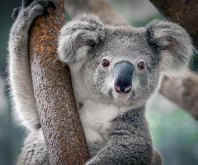
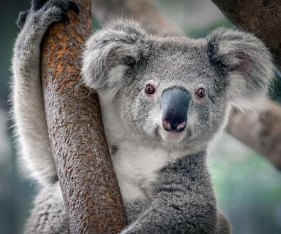

Путеводитель по Австралии
Фантастическая страна-материк
Cтрана Оз
Австралия — самое большое государство Океании. Страна занимает целый континент в Южном полушарии и омывается сразу тремя океанами — Индийским, Атлантическим и Тихим. Здесь не ходят на головах, как когда-то представляли наши предки. Но сознание туристов переворачивается от монолита Улуру, кроваво-красного в лучах заходящего солнца; от живописных пейзажей Великой океанской дороги; от лазури морской глади, в пену разбивающейся о скалы Двенадцати Апостолов; от фантастического микса белоснежных пляжей, засушливых бушей, сочных красок Барьерного Рифа, тропических лесов и безжизненных пустынь. Здесь органично сплетаются традиции аборигенов, культура колониальной эпохи и современные технологии.
Почему же Австралию называют “страной ОЗ”? Все просто - австралийцы не любят длинные слова, поэтому часто сложные названия они сокращают. Так, Australia сокращенно звучит Aussie — отсюда и перевод Оз, а город Брисбен в их речи звучит как Бриззи.
Все фото 

География
Австралия — самый маленький континент. Материк со всех сторон окружен водой. Территория страны разделена на 6 штатов: Новый Южный Уэльс, Квинсленд, Южная Австралия, Западная Австралия, Виктория и Тасмания. Под юрисдикцией Австралии находятся также внешние территории - остров Рождества, Норфолк, Кокосовые и некоторые необитаемые острова.
Карта Австралии
Что учесть, отправляясь в Австралию
- В аэропортах Австралии вас ждет строгий таможенный контроль: лекарства должны быть с назначением врача, сигареты — не более 50 шт. на пассажира, ни в коем случае не берите с собой еду. Из Австралии запрещено вывозить животных и растения (да-да, даже небольшую веточку коралла).
- Схватить тепловой удар в Австралии — проще простого. Поэтому не забывайте о головных уборах, солнцезащитных очках и кремом с высоким уровнем SPF.
- Не забудьте положить в чемодан переходник: в Австралии используют розетки типа I для вилок с тремя плоскими штырями.
- Курение в общественных местах строго табуировано, зато можно приносить свое спиртное практически во все кафе и рестораны.
- Ответственно выбирайте пляж для купания: на диком побережье можно столкнуться с акулой и крокодилами. На суше туристов тоже подстерегает опасность. Так, лучше не дразнить кенгуру, собак динго и утконосов, и ходить по траве только в обуви, чтобы в пятку случайно не ужалили скорпион, паук или сороконожка.
- Продажа алкогольных напитков ограничена по времени: закупиться к вечеринке можно с понедельника по субботу с 17:00 до 00:00.
- Австралийцы с большим трепетом относятся к своему континенту. Здесь работает гражданский контроль Это значит, что любой местный житель сообщит в соответствующие органы, если вы бросите мусор мимо урны, будете курить в неположенном месте, причините вред животному или совершите любое другое противозаконное действие.